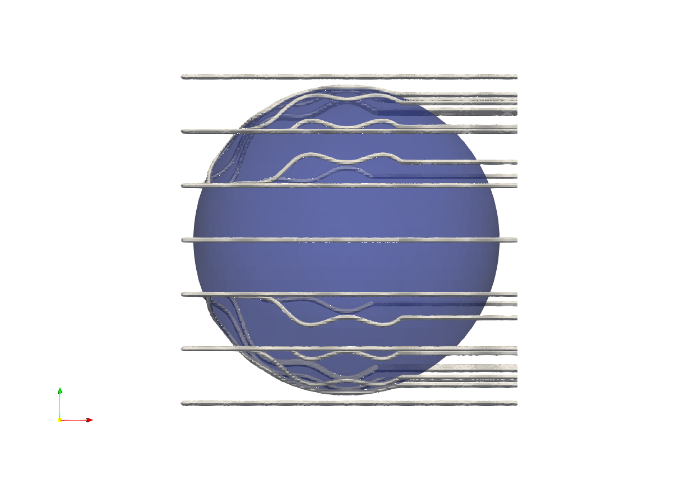
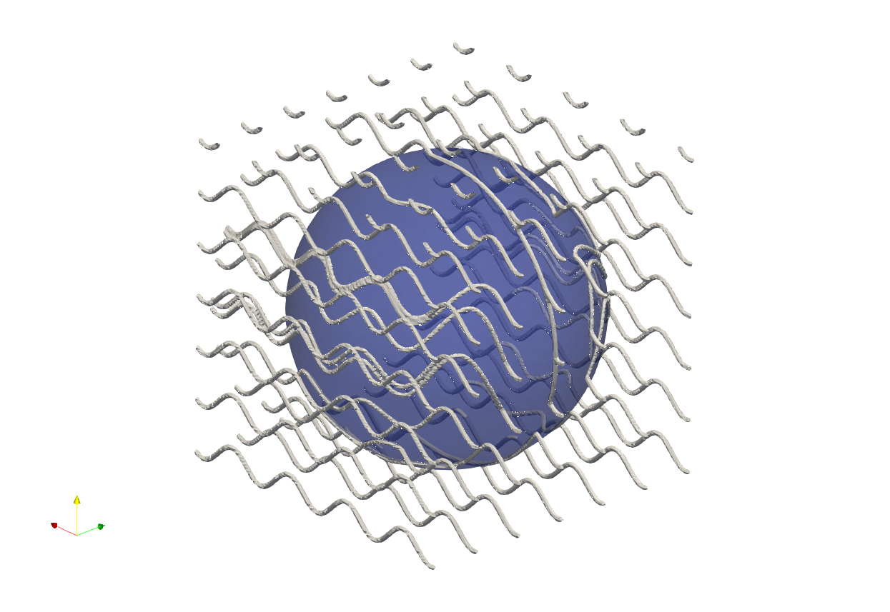
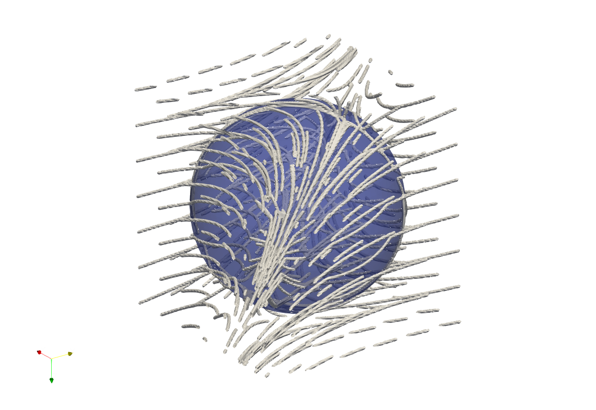
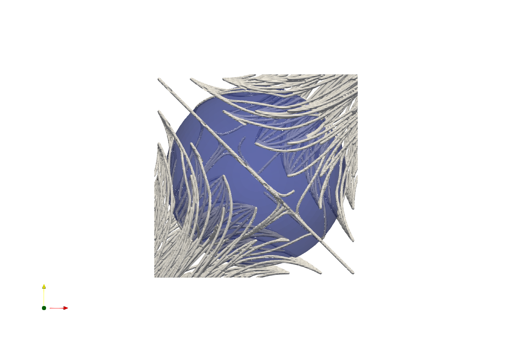

Line Structure 02 - Vector Field#
Artisan provides the keyword Gen_SDFVectorFieldLineMesh to generate a 3D line mesh by tracing streamlines of a user-defined vector field while taking the input geometry into account. The vector field is defined using mathematical expressions in x, y, and z. Artisan generates a signed distance field (SDF) from the input geometry and uses the SDF to modify the vector field close to the geometry surface.
This feature can be used to generate geometry-aware line structures, such as directional lattice structures, reinforcement paths, and line-based infill patterns.
Basic Example#
The following example demonstrates the basic use of Gen_SDFVectorFieldLineMesh.
{
"Setup": {
"Type": "Sample",
"Sample": {
"Domain": [
[-650.0, 650.0],
[-650.0, 650.0],
[-650.0, 650.0]
],
"Shape": "Box"
},
"Geomfile": "Ball_Mesh.STL",
"Rot": [0.0, 0.0, 0.0],
"res": [10.0, 10.0, 10.0],
"Padding": 1,
"onGPU": false,
"memorylimit": 1073741824000,
"JsonWorkDir": true
},
"WorkFlow": {
"1": {
"Gen_SDFVectorFieldLineMesh": {
"inp_meshfile": "Ball_Mesh.STL",
"x_expr": "1.0",
"y_expr": "sin(x/50)",
"z_expr": "0.0",
"start_points": [
[-640.0, -640.0, -640.0],
[-640.0, -640.0, -426.6667],
[-640.0, -640.0, -213.3333],
[-640.0, -640.0, 0.0]
],
"n_points": 900,
"step_size": 2.5,
"attraction_strength": -10.0,
"projection_width": 10.0,
"influence_width": 10.0,
"out_meshfile": "VectorLine_mesh.inp"
}
}
}
}
Vector Field Definition#
The vector field is defined using three mathematical expressions:
"x_expr": "1.0",
"y_expr": "sin(x/50)",
"z_expr": "0.0"
These expressions define the three components of the vector field:
where:
x_exprdefines the X component;y_exprdefines the Y component;z_exprdefines the Z component.
The expressions may use the spatial coordinates x, y, and
z.
For example:
"x_expr": "y + 0.3*z",
"y_expr": "x - 0.3*z",
"z_expr": "-0.3*x + 0.2*y"
defines a spatially varying three-dimensional vector field.
The vector field is evaluated at the current streamline position during the tracing process.
Starting Points#
The start_points parameter defines the starting locations of the
streamlines.
Each starting point consists of three coordinates:
"start_points": [
[x1, y1, z1],
[x2, y2, z2],
[x3, y3, z3]
]
For example:
"start_points": [
[-640.0, -640.0, -640.0],
[-640.0, -640.0, -426.6667],
[-640.0, -640.0, -213.3333],
[-640.0, -640.0, 0.0]
]
One streamline is generated from each starting point.
The distribution of start_points therefore has a significant
influence on the resulting line structure.
Streamline Length and Resolution#
Two parameters control the streamline tracing:
"n_points": 900,
"step_size": 2.5
The step_size controls the approximate distance between consecutive
points along a streamline.
The n_points parameter defines the maximum number of points
generated for each streamline.
The approximate maximum tracing distance can therefore be estimated as:
For example:
The actual streamline may be shorter depending on the vector field.
A smaller step_size produces more closely spaced points and can
better capture changes in the vector field, but increases the computational
cost.
A larger step_size reduces the computational cost but may produce
less accurate paths around rapidly changing vector fields or geometry
features.
Geometry Interaction#
The input geometry is used to generate a signed distance field. The SDF provides information about the position relative to the geometry surface and is used to modify the vector field.
Two geometry-aware effects can be controlled:
projection of the vector field toward the geometry surface tangent;
attraction or repulsion relative to the geometry.
Surface Projection#
The projection_width parameter controls the region in which the
vector field is gradually projected onto the tangent plane of the geometry
surface. For example:
"projection_width": 10.0
Close to the geometry surface, the normal component of the vector field is reduced and the tangential component is retained. This allows streamlines to follow the surface instead of passing directly through it. A larger projection_width causes this surface-following behaviour to influence the vector field farther away from the geometry. A smaller value confines the effect to a narrower region around the surface.
Attraction and Repulsion#
The attraction_strength parameter controls the interaction between the streamlines and the geometry. A positive value produces attraction toward the geometry:
"attraction_strength": 10.0
A negative value produces repulsion from the geometry:
"attraction_strength": -10.0
A value of zero disables the attraction/repulsion contribution:
"attraction_strength": 0.0
Influence Width#
The influence_width parameter controls the spatial range of the
attraction or repulsion effect. For example:
"influence_width": 10.0
A smaller value produces a more localized interaction with the geometry, while a larger value allows the geometry to influence the vector field over a larger distance. The projection_width and influence_width have different
purposes:
Parameter |
Effect |
|---|---|
|
Surface tangential projection region |
|
Attraction/repulsion influence range |
Parameter List#
The parameters for Gen_SDFVectorFieldLineMesh are listed below.
Parameter |
Details |
|---|---|
|
File path of the triangular surface geometry used to generate the SDF and define the geometry interaction. |
|
Mathematical expression defining the X component of the vector
field. The expression can use |
|
Mathematical expression defining the Y component of the vector
field. The expression can use |
|
Mathematical expression defining the Z component of the vector
field. The expression can use |
|
List of three-dimensional coordinates defining the starting points of the streamlines. One streamline is generated from each starting point. |
|
Maximum number of points generated for each streamline. |
|
Approximate distance between consecutive points along a streamline. |
|
Controls the interaction with the geometry. Positive values attract the streamlines toward the geometry, while negative values produce repulsion. |
|
Width of the region around the geometry surface where the vector field is projected toward the surface tangent direction. |
|
Controls the spatial range of the attraction or repulsion effect. |
|
File path for the generated line mesh. |
Output Mesh#
The output of Gen_SDFVectorFieldLineMesh is a line mesh. Each streamline consists of a sequence of points, and consecutive points are connected by line elements. For example, if a streamline contains:
P0, P1, P2, P3, P4
the generated mesh contains:
P0-P1
P1-P2
P2-P3
P3-P4
The output mesh is written using the specified out_meshfile.
Generating a Line-Based Lattice#
The generated vector-field line mesh can be used as the basis for subsequent Artisan operations. The examples Test_jsonParametricGeometryVectorField_LineStructure.json
and Test_jsonParametricGeometryVectorField_LineStructure_02.json
demonstrate complete workflows for generating line structures using a user-defined vector field. In these examples, the vector field is evaluated around a ball geometry, and streamlines are generated from specified starting points. The resulting
line meshes illustrate how different vector-field definitions produce different line-structure patterns.
The first example Sinusoidal Vector Field uses the following vector field:
"x_expr": "1.0",
"y_expr": "sin(x/50)",
"z_expr": "0.0"
The field has a constant X component, while the Y component varies sinusoidally with X. The resulting streamlines therefore follow a predominantly X-directed flow with a sinusoidal variation in the Y direction.


The second example Rotational 3D Vector Field uses a fully three-dimensional vector field:
"x_expr": "y + 0.3*z",
"y_expr": "x - 0.3*z",
"z_expr": "-0.3*x + 0.2*y"
The interaction between the three vector components produces a more complex three-dimensional streamline pattern around the ball.


Practical Recommendations#
Starting point distribution
The starting points determine where the line structure begins. A regular distribution generally produces a more regular line pattern, while a customized distribution can be used to control the local density of the generated lines.
Step size
The step_size should be selected according to the geometric and
vector-field scales. Smaller values are recommended when the vector field
changes rapidly or when the geometry contains small features.
Number of points
Increase n_points when longer streamlines are required. The
approximate maximum tracing distance is proportional to:
Projection width
Increase projection_width when the generated lines need to follow
the geometry from a greater distance.
Influence width
Increase influence_width when the geometry needs to influence
streamlines farther away from the surface.
Attraction strength
Use positive values when lines should be drawn toward the geometry and negative values when lines should be pushed away from it.
The combination of these parameters provides control over both the global direction of the generated lines and their interaction with the geometry.